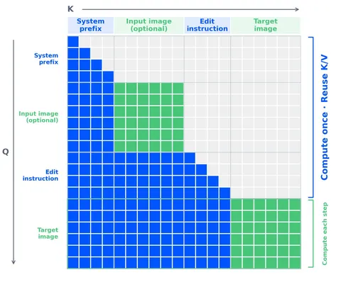

Сегодня разбираем блогпост Qwen об их свежей модели. Главное архитектурное изменение — сокращение числа параметров генератора с 20B до 7B (модель стала ощутимо компактнее) и переход на single-stream DiT (в прошлой версии использовали MMDiT).
Судя по опубликованным в посте картинкам, модель хороша в работе с реалистичными деталями и лицами, а по впечатлениям инженеров из команды YandexART, стиль местами напоминает GPT. Модель уже успели протестировать внутри — и получили неоднородные результаты по разным задачам, например, эдитинг выглядит действительно хорошо, а text-to-image пока проседает.
У модели появились интересные новые возможности. Например, она научилась работать с несколькими изображениями (авторы заявляют до десяти референсов за раз!) — и при этом поддерживать их редактирование.
На выходе она предсказывает не только RGB, но и альфа-канал, благодаря чему можно получать изображения с прозрачным фоном и накладывать объекты слоями, как в фотошопе.
Ещё модель понимает визуальные указания: нужную область можно обвести или закрасить прямо на исходной картинке, а в промпте описать правку. Авторы также показывают последовательное редактирование с сохранением остальных элементов сцены.
Самое интересное — маска аттеншна. Текстовые токены используют causal attention, при котором токен видит только себя и предыдущие. Внутри каждого изображения используется full attention, а токены этого изображения видят все предыдущие, но не последующие. Поэтому таргет видит весь кондишен, а кондишен не зависит от таргета.
Такая схема важна для KV-кэша. Эта архитектура позволяет один раз посчитать ключи и значения (KV) для неизменной части входа, сохранить их, а на следующих шагах диффузии переиспользовать, а не считать каждый раз заново. Для этого мало одной маски, так как промежуточные представления кондишена должны оставаться одинаковыми от шага к шагу. Поэтому здесь прибегли к разделению модуляции:
• для кондишена модель использует эмбеддинг нулевого шага,
• для таргета использует эмбеддинг текущего шага диффузии.
На первом проходе можно посчитать KV для префикса и наполнить кэш, а дальше брать их из памяти. Таргет при этом пересчитывается на каждом шаге.
Результаты
Отдельно удалось поэкспериментировать с влиянием кэша на скорость.
В проведённых внутри Яндекса замерах на коротком кондишене full attention оказался быстрее block-causal-варианта и варианта с KV-кэшем. Скорее всего, так происходит из-за дополнительных расходов на kernel-вызовы.
Но с ростом длины кондишена выигрыш от кэша увеличивается. В отдельном end-to-end-замере на Qwen полная генерация заняла 6 секунд без кэша и 3 секунды с ним. Картинки при этом получились одинаковыми.
Можно сделать вывод, что KV-кэш однозначно полезен при длинном кондишене, но сам по себе ускорение не гарантирует, так как нужно учитывать дополнительные расходы и память.
Есть соображение, что KV-кэш ускоряет не только генерацию в проде — он может пригодиться и там, где много раз запускается модель-учитель, например, при дистилляции и RL.
Авторы также выложили веса Qwen-Image-2.1.
Разбор подготовил
CV Time
